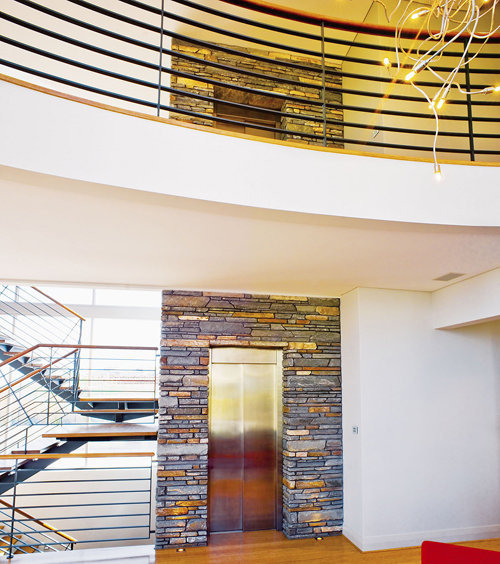

Những điều cần biết trước khi mua thang máy gia đình
Để cuộc sống thêm hiện đại, tiện nghi hơn, cùng với đó là công nghệ tiên tiến và phát triển ngày một vượt bậc thì việc lắp đặt những chiếc thang máy đã không còn xa lạ trong mỗi khu chung cư, tại các trung tâm thương mại hay thậm chí trong một hộ gia đình hiện đại nào đó. Thang máy làm phương tiện vận chuyển để tiết kiệm thời gian, công sức là điều không thể thiếu trong cuộc sống hiện đại ngày nay.
Có một số vấn đề mà trước khi lắp đặt một chiếc thang máy người tiêu dùng cần tìm hiểu rõ ràng. Như vấn đề diện tích đất xây dựng, lắp đặt thang máy hạn hẹp, nhất là tại các thành phố lớn thì vấn đề đó càng trở nên khó khăn hơn, bên cạnh đó những ngôi nhà được cải tạo lại thì vấn đề không gian dành cho thang máy càng hạn chế. Vậy nên thay vì sử dụng những chiếc thang máy gia đình nhập khẩu nguyên chiếc, bạn có thể chọn cho mình những chiếc thang máy liên doanh để phù hợp với không gian, diện tích nhà mình hơn, không những thế khi bạn chọn thang máy gia đình liên doanh thì bạn còn có thể tiết kiệm được một khoản chi phí không hề nhỏ. Đặc biệt về chất lượng của chiếc thang máy liên doanh cũng chẳng hề kém hơn một chiếc thang máy nhập khẩu nguyên chiêc.

Vấn đề an toàn cũng luôn được đặt lên hàng đầu, đó còn là phương châm của những người làm nghề thi công, lắp đặt công trình nói chung và trong ngành thang máy nói riêng. Tuy nhiên đã gọi là máy móc thì không phải lúc nào cũng tránh được các rủi ro, hư hỏng gây ảnh hưởng đến sự an toàn của người sử dụng. Một trong những sự cố thang máy có nguy cơ tiềm ẩn về tính mạng nhất là thang máy rơi tự do. Chính vì thế trước khi lắp đặt cho ngôi nhà của mình một chiếc thang máy, bạn cần trang bị cho mình đầy đủ những kiến thức để có thể xử lý tốt trong trường hợp sự cố thang máy xảy ra.
Không may có sự cố thang máy rơi tự do xảy ra điều đầu tiên bạn cần làm là hãy thật bình tĩnh và sau đó thực hiện các thao tác sau:
- Bạn hãy nhanh chóng nhấn tất cả các nút trên bảng button cabin vì khi đó bộ phận cung cấp điện khẩn được kích hoạt thì cabin sẽ không rơi nữa.
- Nhanh chóng bám chắc vào tay vịn của thang máy. Việc này sẽ giúp bạn không bị mất thăng bằng để tranh nguy cơ bị ngã.
- Với tư thế đầu và lưng thẳng dựa vào vách thang máy, tư thế này giúp giảm chấn thương cho cột sống của bạn khi tiếp xúc với hố pít.
- Cong đầu gối tối đa để có thể tránh trường hợp bị gãy xương chân nếu gặp chấn động mạnh.
Đây là những biện pháp giúp bạn hạn chế mức tối đa thương tích nếu không may sự cố xảy ra. Bên cạnh đó thang máy cũng như con người vậy, thay vì cung cấp năng lượng thì thang máy cũng cần được chăm sóc, bảo dưỡng, bảo trì thường xuyên để cho thang máy nhà bạn thật sự là một thiết bị hiện đại.
Sản phẩm thang máy
- Thang máy tải khách
- Thang máy không phòng máy
- Thang máy quan sát
- Thang máy tải hàng
- Thang máy bệnh viện
- Thang máy chung cư cao tầng
- Thang máy gia đình - HomeLift
- Thang máy tải thực phẩm
- Thang máy chở ôtô
- Thang cuốn